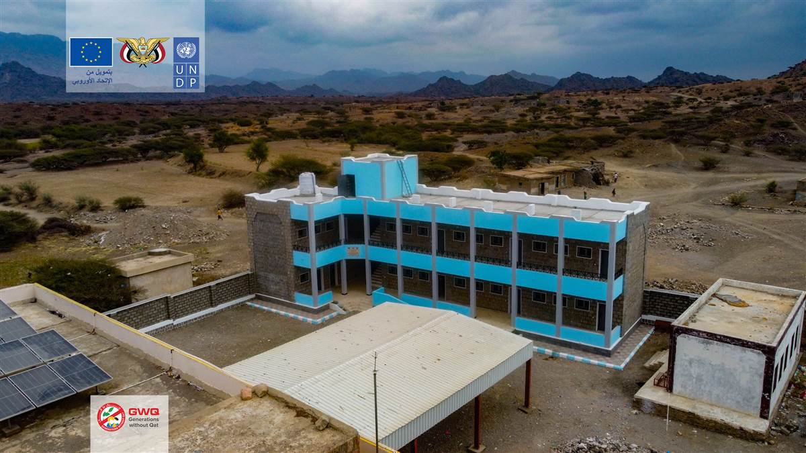

التعليم
افتتاح مبنى مدرسة ابن خلدون الجديد
إنشاء فصول دراسية متكاملة في مديرية المضاربة ورأس العارة بمحافظة لحج
اكتشف مبادراتنا لبناء مستقبل أفضل
إنشاء فصول دراسية متكاملة في مديرية المضاربة ورأس العارة بمحافظة لحج
ورشة عمل لدعم خطة التنمية الاقتصادية والاجتماعية لمحافظة تعز (2024-2026)، بتنظيم مشترك بين السلطة المحلية وبرنامج الأمم المتحدة الإنمائي، وبمشاركة الحكومة اليمنية، الاتحاد الأوروبي، المانحين، القطاع الخاص، والمجتمع المدني.
تدريب 150 امرأة على حرف ومهن بديلة توفر دخلاً مستقراً
إطار مشروع تعزيز مشاركة المرأة في عمليات الإغاثة والإنعاش والسلام في اليمن، نظمت منظمة أجيال بلا قات، اليوم الخميس 6 أكتوبر 2022، في مديرية صالة بمحافظة تعز الندوة الخاصة حول "دور المرأة وقيادتها في الاستجابة الإنسانية"
توفير الكتب والمراجع التعليمية لـ 20 مدرسة في المناطق الريفية
مشروع إنارة شوارع مديريتي القاهرة والمظفر بتعز بالطاقة الشمسية<